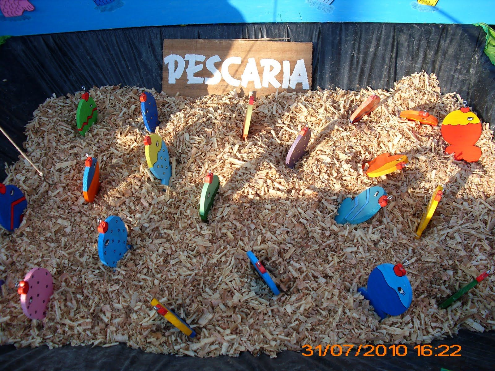
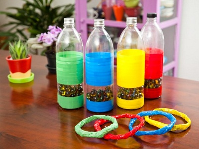
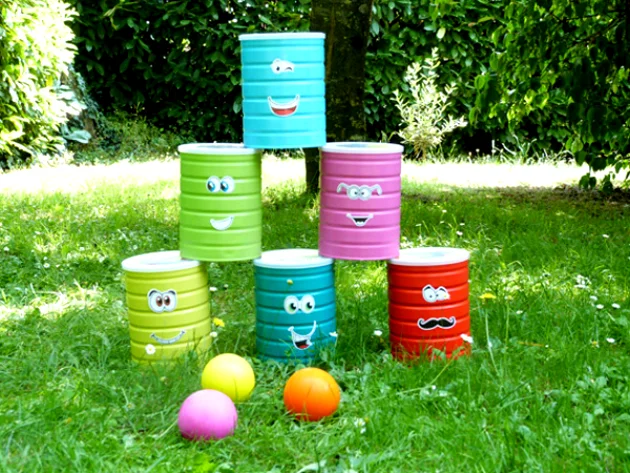

O São João é celebrado e amado por todo o país. Na região Nordeste e Norte as festas juninas se destacam por seu tamanho e animação como um dos símbolos mais fortes de nossa cultura popular. Uma junção de música, dança, comidas, decorações típicas, alegria e uma energia maravilhosa. Algumas cidades fazem do São João um evento grandioso, durando o mês inteiro com centenas de atrações e milhares de visitantes para dançar, comer, cantar e se encantar.
ORIGEM
A festa tem origem pagã , pois as festas que lhe deram origem comemorava em junho as pessoas a
chegada do verão homenageando os Deuses da natureza e da fertilidade, enquanto pediam fartura
em suas colheitas de cereais como o milho - que hoje é o ingrediente mais comum das comidas
típicas da festa.
Como a igreja não conseguia acabar com a essa festa, acabou aderindo e inserindo um caráter
religioso.
A festa junina tem origem pagã, pois as festas veio de festas que homenageavam os deuses da
natureza e da fertilidade e pediam fartura nas safras, pois era nessa altura que começava o
período da colheita de cereais.
CHEGADA DO SÃO JOÃO NO BRASIL
Quando introduzida no Brasil, a festa era conhecida como festa joanina, em referência a São João,
mas, ao longo dos anos, teve o nome alterado para festa junina, em referência ao mês no qual ocorre,
junho.
Inicialmente, a festa possuía uma forte tom religioso – conotação essa que se perdeu em parte,
uma vez que é vista por muitos mais como uma festividade popular do que religiosa. Além disso, a evolução
da festa junina no Brasil fez com que ela se associasse a símbolos típicos das zonas rurais.
O crescimento da festividade aconteceu sobretudo no Nordeste, região que atualmente possui as maiores
festas.
Durante as festas juninas no Brasil, são realizadas danças típicas, como as quadrilhas. Também há
produção de inúmeras comidas à base de milho e amendoim.
BRINCADEIRAS
Uma das coisas que torna as festas juninas ainda mais divertidas são as típicas brincadeiras de São João. Veja algumas das brincadeiras abaixo que pode deixar sua festa junina mais animada!:
Pescaria
Nos arraiás, a montagem é geralmente feita com caixas cheias de papel picado ou isopor, com peixinhos de madeira ou papelão e varas improvisadas, ou em uma piscininha com peixes de Cada peixe tem uma prenda escrita nele, e leva o prêmio consigo quem conseguir pescar.
Argolas

As argolas é um jogo de mira, porém é preciso acertar os objetos no chão fazendo com que argolas fiquem presas e você some pontos. A brincadeira pode ser feita com garrafas de plástico cheias de bolinhas de gude, para criar peso e não deixá-las balançarem ao jogar cada argola. Em seguida, as crianças ou os adultos tomam distância do local onde estão as garrafas e fazem os arremessos. Quem acertar mais argolas, ou somar mais pontos, ganha!
Corrida de saco

A corrida do saco nada mais é do que uma disputa para ver quem cruza primeiro a linha de chegada. Porém, o desafio está na forma como se corre: os participantes devem entrar em sacos de pano ou de estopa e ir pulando, segurando as pontas do saco, sem cair. Essa corrida maluca pode render altas risadas durante o trajeto.
Tiro ao alvo

O objetivo desse jogo, também conhecido como Bola na Lata ou Derruba Latas, é derrubar todas as latas.
Elas devem ficar em cima de uma mesa dentro da barraquinha ou noutro local reservado para o jogo.
Do lado de fora da barraquinha, os participantes tentam derrubar as latas em três tentativas de
arremesso de uma bolinha.
COMIDAS E BEBIDAS TÍPICAS
Como dito anteriormente, o milho e o amendoim são alguns dos ingredientes mais comuns da comida. Conheça algumas comidas e bebidas da época:
ComidasBebidas
Receitas Juninas
CARACTERÍSTICAS
MELHOR SÃO JOÃO
Aqui estão as 6 melhores festas de São João do Brasil:
| HANKING | CIDADE |
|---|---|
| Campina Grande, Paraíba | |
| Caruaru, Pernambuco | |
| Mossoró, Rio Grande do Norte | Aracaju, Sergipe | São Luís, Maranhão | Belo Horizonte, Minas Gerais |